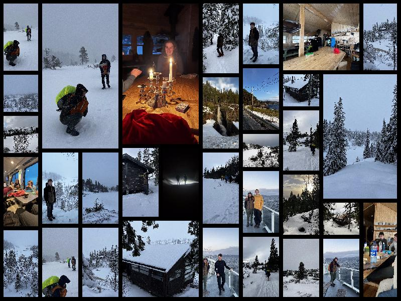
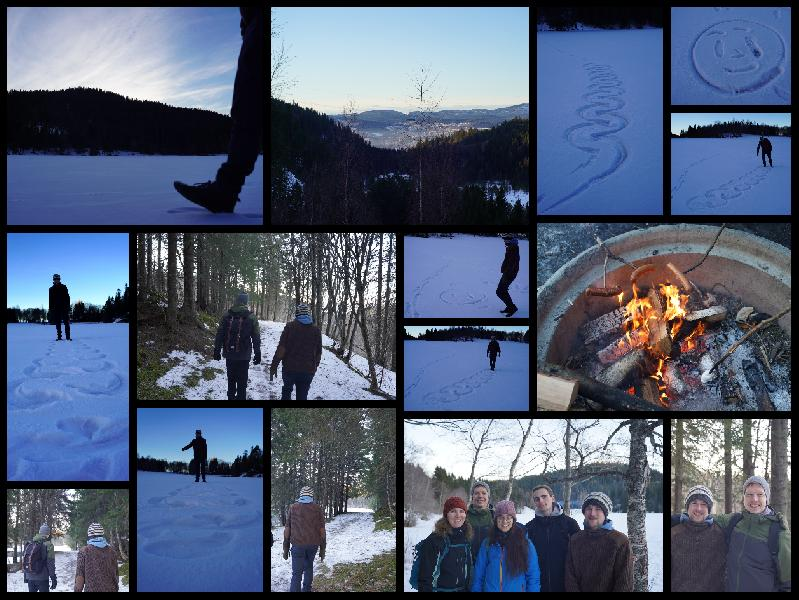

Making this website
I takes some time to engineer this website. I have to work with Hyper Text Markup Language, which you can see if you inspect this website by for example pressing F12. You are on the receiving end 😊.
Thesis Introduction written
The introduction is written with the grandparents in mind, so it should be at least a little bit understandable! Have a look at the introduction.
Learning Norwegian
All the Norwegian people speak Norwegian to me often being suprised that I don't know what they are saying. NTNU offers some language courses, but I heard there was a Dutch guy who learned Norwegian in 2 weeks by himself. I found some online help in the form of avocabulary list from NTNU. https://www.ntnu.edu/now/vocabulary/list. Now I just need an empty day to give it my full focus to learn Norwegian.
Birds are returning
Since yesterdy, 6 of febuari I am seeing more kinds of birds again!ReStore General Meeting
It was nice meeting. Check the ReStore Instagram or ReStore Facebook for updates!
Cabin trip
View Larger Map
As you know me, of coursse I went in almost blind into this trip. I barely😧 took a duvet too sleep in. I forgot to charge my cheap phone and left with just 38% charge in the cold. Oh well. Met up with others from the group who knew the route. We had to cross the water with the ferry, which the bus drove on. From the other side we walked along side a car road for ~2 hours and took the deep snow path up the mountain for another ~2 hours. We at a split we took the left instead of the right way, I know stupid, but that took us too are more adventerous road with a hail storm and fast winds. Walking backwards meant you would not get hit in the face by ice. With the last part rolling through deep snow we arrived at Koiene Mevasskoia, rented from NTNUI. The route we could have taken.
There is a useful infofolder, which I only found after the trip.
Taco Friday
A true Norwegian cultural day of the week. Apparently they really like tacos (and also pizza). I was invited to one. I already looked Norwegian, now I know how to act like one. Only the language left to learn.
Moving in and out
It took one trip with the bus too move all my stuff to the new room, though my housemate, which I am leaving, helped me carry it.
Campfire hike
Trondheim Defrosting
Slowly the snow is dissapearing, with the ice following behind.
Vemdalen 🏂Snowboarding
From sunrise till sunset. One day without a break.
Thesis
In between all the commotion I will be working on my thesis on Visual Programming 😁. Leave a comment if you want!
Hello World
Trying out this thing called a website to effieciently update many people. It might motivate me to put more content on it than before on Polarsteps.